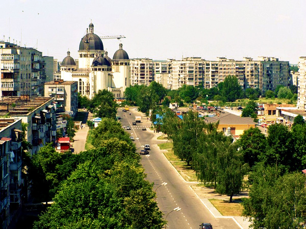

Про місто
Червоноград, який зараз має назву Шептицький, — моє рідне місто. Для мене воно особливе через спогади та знайомі місця.

Чому я обрав це місто
Я обрав його тому, що це моє рідне місто. Тут я виріс і провів багато часу.
Цікаві місця
- Палац Потоцьких
- Центральна частина міста
- Річка Західний Буг
Моя оцінка: 10/10